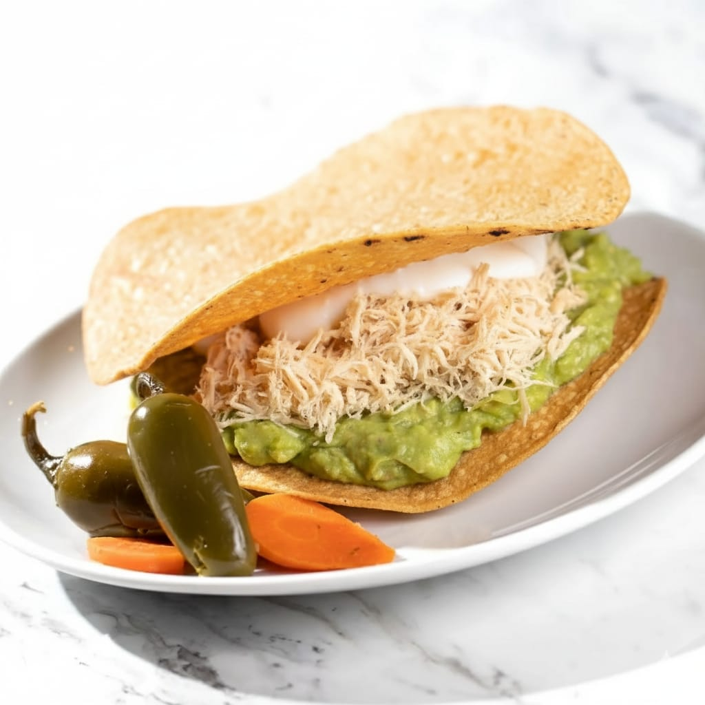
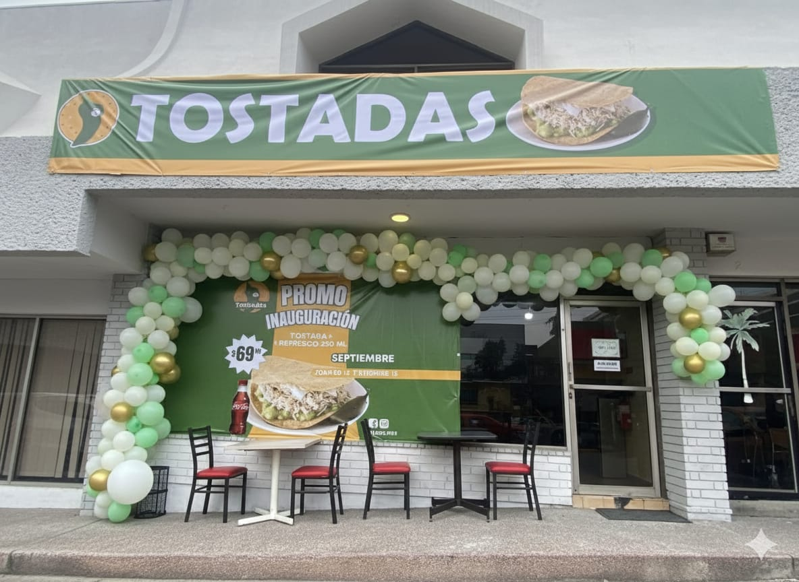

Receta Insignia

Tostada Estilo Siberia
Crujiente tostada gigante servida con abundante guacamole fresco, pechuga de pollo deshebrada, crema selecta y chile jalapeño en escabeche.
Una propuesta gastronómica con raíces regiomontanas, inspirada en la tradición de las tostadas estilo Siberia. Combinamos calidad, sabor y procesos estandarizados para ofrecer una experiencia basada en un platillo que permanece vigente en la cultura y las preferencias de nuestra región.
ConócenosEn Tostadas Sabor y Más hemos construido un concepto sólido basado en calidad, tradición estilo Siberia y eficiencia operativa.
Nuestro modelo ha sido perfeccionado con los años para ofrecer una operación práctica, rentable y adaptable a diferentes mercados, manteniendo siempre el sabor que distingue a nuestra marca.
Ingredientes seleccionados y recetas que garantizan la misma calidad en cada sucursal.
Un producto que forma parte del gusto diario de miles de clientes.
Operación diseñada para facilitar la gestión y optimizar resultados.
Acompañamiento desde la apertura hasta el crecimiento del negocio.
Un menú versátil de fácil preparación y alta rotación que combina la riqueza de la cocina regional norestense con ingredientes frescos de primera calidad.

Plaza Picachos - Local 3 · Miguel Hidalgo y Costilla 2258, Col. Obispado, 64060 Monterrey, N.L.
Lun a Vie: 12:00 pm – 4:30 pm | Sáb: 12:00 pm – 3:30 pm | Dom: Cerrado
Plaza Magnolia · Av. Miguel Alemán / Prol. Madero #4425, Col. Linda Vista, 67123 Guadalupe, N.L.
Lun a Vie: 10:30 am – 4:30 pm | Sáb: 10:30 am – 3:30 pm | Dom: Cerrado

Somos una empresa comprometida con la innovación y el desarrollo de oportunidades para nuevos inversionistas. Nuestro propósito es construir una red de franquicias que combine la tradición gastronómica con la eficiencia operativa, tomando ventaja del uso inteligente de la tecnología.
Creemos en el trabajo colaborativo, en el valor de compartir conocimientos y en la creación de experiencias memorables para nuestros clientes y socios. Buscamos compartir nuestro modelo de comida rápida estilo Siberia en una propuesta moderna, rentable y cercana.
Contáctanos →Todo lo que necesitas saber sobre nuestro sistema gastronómico y modelo de franquicia.
Para nosotros, cada mensaje es el comienzo de algo especial. Ya sea que tengas antojo de nuestro sazón o estés interesado en llevar nuestra franquicia a tu ciudad, estamos aquí para escucharte.
+52 72 91 09 23 41 (Llamadas y WhatsApp)
Déjanos tus datos para enviarte el dossier de franquicia, costos del servicio, retorno de inversión y operatividad.